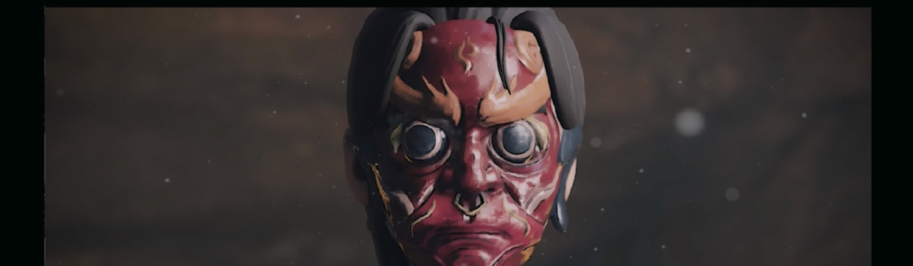
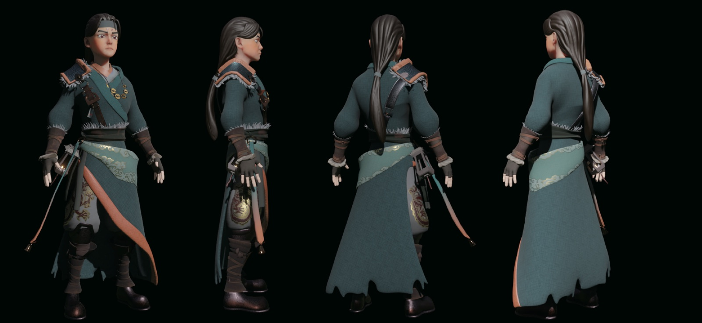
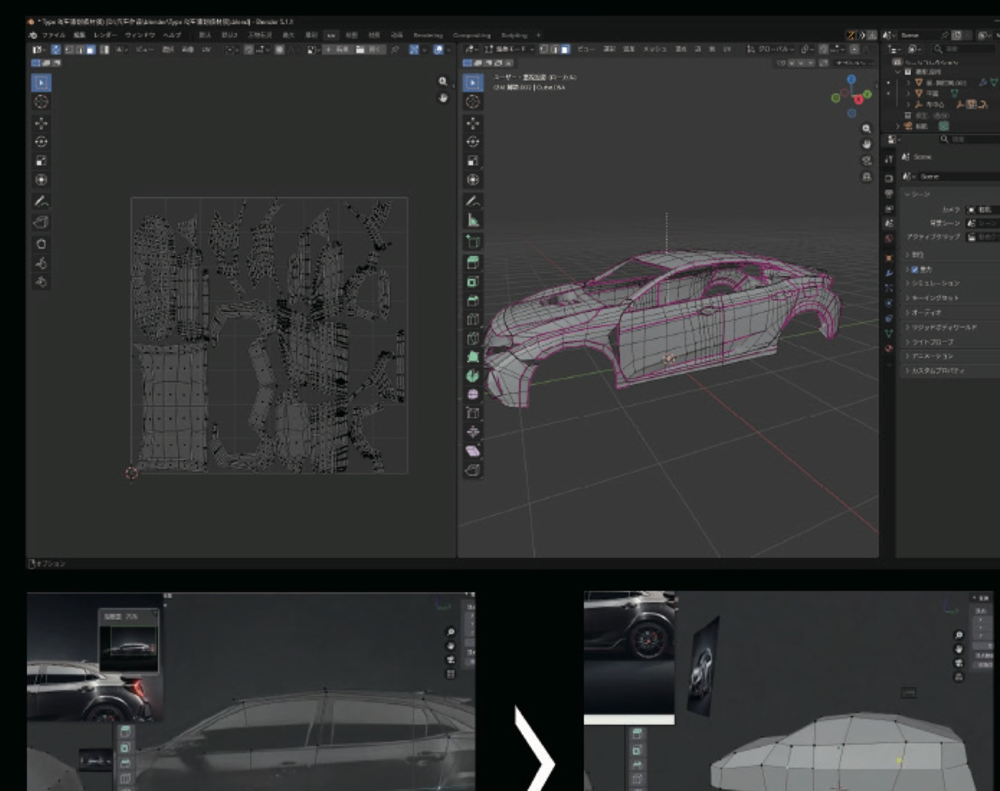
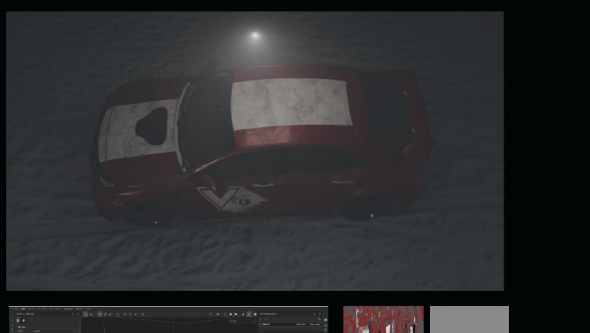
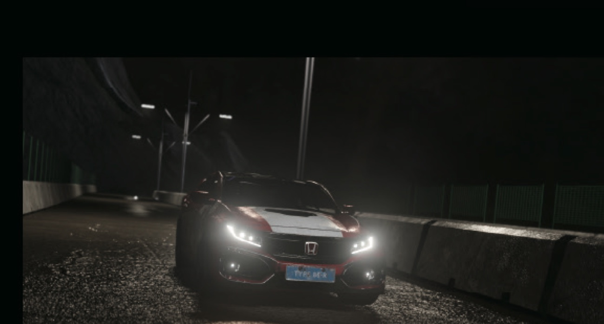

逐剣
火の神仮面
Fire God Mask
物語の鍵となる仮面。日本の能面と中国の儺戯（ぬおぎ）面を調べたうえで、アニメの画面に馴染む造形へ落とし込みました。デザイン画から彫刻、テクスチャ、本編カットまでの流れです。
デザイン画
仮面のシルエットと角の巻き方、隈取りの入り方を平面で決めます。正面と側面の二面を描き、立体に起こしたときの見え方を先に固めました。

ZBrush 彫刻
デザイン画をもとに ZBrush で造形。角の渦や眉のうねりなど、面の流れが光を受けたときに影として読めるよう、彫りの深さを調整しています。

テクスチャ制作
Substance 3D Painter で彩色。京劇の隈取りを参照しつつ、漆の艶と金彩の擦れを重ね、古びた祭具としての質感を出しました。

本編カット
ライティングと被写界深度を合わせ、本編のカットへ。ポリゴン数を抑えた設計のため、アニメーション側でも軽く扱えています。

逐剣
キャラクターデザイン
Character Design
主人公・祝剣（しゅくけん）の設定から最終モデルまで。アニメーションの画面に耐える立体でありながら、半写真的ではない中間の質感を目指しました。
三面図と設定
正面・背面・側面と髪の流れ、配色、衣装と小物の素材を一枚にまとめます。ここで決めた色数と素材が、後のテクスチャの指針になります。

モデリング
三面図をもとに造形し、リギングとアニメーションに耐えるトポロジーへ整えます。衣の重なりは布のシミュレーションを前提に分けて作りました。

テクスチャ制作
顔は UV の歪みが出やすいため、モデル修正とテクスチャを往復しながら調整。半写実に寄りすぎないよう、肌の陰影は手で描き足しています。

最終モデル
四方向からの最終確認。布の柄、金具の金属感、髪の束感がどの角度でも破綻しないことを確かめました。

CG映像制作
Honda CIVIC
CG Commercial
車両CGの映像制作。モデリングからテクスチャ、夜の峠道のライティングまでを一人で担当しました。
モデリングと UV 展開
実車資料をもとに面を追い、ハイライトが素直に流れるようボディの曲面を整えます。塗り分けを見据えて UV を展開しました。

テクスチャ制作
塗装の層と汚れを分けて作成。クリア層の映り込みと下地の粒状感を重ね、走行後の車体らしい表面にしています。

完成カット
濡れた路面の反射とヘッドライトを主役に、夜のトンネル出口で撮影したようなカットへ仕上げました。
